Polished screenshots are curated. Decide which ones to take, crop and mark the ones you keep, put what matters in the step and alt text around them, and keep each one swappable for the next redesign.
These are the principles Minda Myers (www.mindamyers.com) uses every day as an AI Engineer on the AI Catalyst team at Stanford University, writing how-to documentation for GenAI platforms (Claude, ChatGPT, Gemini).
This site is for the author who maintains the documentation, and for their agent. It is not for the reader of the how-to. Every guideline is written from the author's side of the desk, and the agent prompts are first-class, not a footnote.
The software you're documenting redesigns itself every few weeks now. AI products are the worst offenders, but it's spreading. A button moves. A panel gets a new name. The settings page splits in two. Every screenshot you publish is a small debt. It comes due at the next redesign, and nothing tells you when. You find out when a reader emails to say the button isn't there. The documentation exists so the team answers fewer tickets and stops rebuilding slides for every audience.
So: sixteen guidelines in three groups, under five principles. Each guideline says what you give up by following it, plus the cases where following it would make the document worse. Hit one of those, take the screenshot. The point isn't zero screenshots. The point is that every screenshot in your document is one you decided to take.
Run it on every screenshot that stays
Screenshot Sanity Test

Example step, used only for this picture. Its alt text is "The Google Drive toggle in Connectors, switched on (green, knob to the right)." With your hand over the screenshot, could you finish Step 3 using only that line?
Alt text describes the action taking place in the screenshot. Cover the screenshot with your hand: the alt text alone must give enough information to understand what needs to happen.
Primary goal. Communicate what a reader who cannot see the image needs to understand from it.
Secondary goal. Give sighted readers a supporting sentence that adds to the step text rather than repeating it.
Run three tests, in order, on each screenshot you plan to keep. Don't just read them: cover the image with your hand or a couple of fingers and actually do it.
Hand test, alt text alone. Cover the image. Read only the alt text. Could you complete the step? If you would have to lift your hand, the alt text isn't done.
Hand test, in context. Hand still covering the image. Read the step text and the alt text together. Does the alt text add to the step or repeat it? Trim the repeat.
Agent test. Could an agent operating the interface on behalf of a non-sighted user take the correct action from the alt text alone? If not, the alt text is missing a location, a label, or a state.
If nothing is left after trimming, the screenshot goes too.
Alt text never carries steps. Instructions belong in the step body. Reviewers caught alt text that had started drafting steps ("Open the general access menu to choose who can open the doc"). Each time, the step moved up and the alt text shrank.
Two exceptions. A complex image (a dashboard, a chart) gets a longer description near the image, not alt text. An error message or status string goes in the prose.
Before the guidelines
Five principles sit under every guideline
A principle shapes a whole document. A guideline handles one screenshot.
1
Every essential action, interface label, prerequisite, warning, and expected result has to be available outside the screenshot.
2
Minimize the number of surfaces you have to maintain, at every available opportunity.
3
Compartmentalize your documentation, especially the sections most likely to change, so that when an interface is updated they can be swapped in and revised quickly and easily.
4
One step, one state change.
Every step represents one conceptual change in state. It opens with no more than half a sentence on where the previous step left the reader, then the action, then the state the reader should be in when it ends. Most steps carry one screenshot. A second screenshot in a step is allowed only when one picture cannot show how to reach the new state.
5
Canonical route first, shortcuts after.
The first time through, a reader follows the route that shows them where things live. Shortcuts (slash commands, product search, deep links) come after, as a tip, once the reader can picture what the shortcut skips. "Replace: product search" and "Replace: deep link" stay as they are; this principle says where in a document they belong. The Remote Control doc is the worked case: the session-rail route is the steps, /remote-control is the tip underneath.
How to work
Process: screenshots first, then the narrative
Walk the flow in the readers' tenant and take a screenshot at every state change. Don't crop yet.
For each screenshot, write the narrative: half a sentence on where the previous step left off, the action, the resulting state.
Run the five-question check on each screenshot. Keep, replace with text, or cut.
Crop what stays ("Shoot: crop to the minimum"), box what the reader touches or what changed ("Shoot: red boxes"), and edit out what the reader won't see ("Shoot: edit out what the reader won't see").
Write the alt text and run the Screenshot Sanity Test.
Add callouts for any concept the screenshots introduced ("Write: callouts for new concepts").
Give the no-context reader test to one person who hasn't seen the flow. Abhisikta's colleague test on the V2 docs is the model.
One screenshot per step is the default output of step 1; two per step needs the Principle 4 justification written into the step.
The guidelines
Sixteen guidelines, in three groups
Open What it costs under any guideline for the tradeoff and the exceptions. Guidelines are cited by group and name, for example "Shoot: crop to the minimum".
Guidelines · group 1 of 3
Write around it
You are writing the step. These are the words every step needs, whether or not a screenshot stays.
Write 1 · name the control
Name the control the way the interface does
"The Invite members button." Exactly that string. One sentence serves three audiences: sighted readers, screen reader users hearing the same words announced, and anyone hitting Ctrl+F.
loses: position
What it costs, and when to break it ▾
What's lost
Position. Names repeat. "Edit" might show up six times on one page and the callout gives the reader no way to pick the right one.
When not to follow it
The name appears more than once on the screen.
The visible label and the accessible name don't match. Happens constantly with icon buttons whose tooltip says one thing and whose aria-label says another. The reader ends up hunting for text that isn't on screen anywhere.
The control has no visible label, or its name is new to the reader. Use "Write: name it, locate it once" instead.
Write 2 · name it, locate it once
Name it, locate it once, then reuse the name
When a control has no visible label, or its name is new to the reader, give it a plain name the first time it appears, say where it sits, and list one or two other names it goes by. Then use your name consistently.
Example from the Claude Docs how-to: "the message box at the bottom of the chat (also called the message composer)."
Write a term the way the interface writes it, first. When the interface is not clear, or has no label, pick one canonical term and use it throughout; list the other names the element goes by once, somewhere in the document, usually near the first use. If the interface says "Show session rail", the term is session rail, lowercase. A coined term takes ordinary sentence case. Camel-casing a term the vendor doesn't capitalize breaks "Write: name the control" and Ctrl+F.
loses: a match with the vendor's label
What it costs, and when to break it ▾
What's lost
Ownership. A coined name is one more thing you own. If the vendor later labels the control, your name may not match.
When not to follow it
The element is universally known. A button, a checkbox. Naming it adds nothing.
The naming would bloat the step. Then name it later, or in a separate callout, not inline.
Write 3 · icon in the sentence
Put the icon in the sentence
"Click the ⚙ icon." Small, scales with the text, no screenshot.
loses: locationfidelity risk
What it costs, and when to break it ▾
What's lost
Location again. You've identified the icon, not where it sits. There's a fidelity risk too: your glyph isn't the vendor's glyph, and a near-match confuses people more than no picture would.
When not to follow it
The vendor's icon is custom and nothing standard comes close. Use a tiny crop.
Several similar icons sit next to each other. A toolbar of gears. Then position is the information, not shape.
Write 4 · typed strings in a code block
Anything they type goes in a code block
Prompts, values, URLs: code block, with one-click copy, placed at the step where it is pasted, not at the top of the document.
A screenshot may show the string the reader types, but the same string must also appear in the code block.
Show the paste target only when the input field is unlabeled or sits among several that look the same. Not "when it feels helpful." Three authors will resolve that three ways and the document ends up with no rule at all.
loses: destination
What it costs, and when to break it ▾
What's lost
The destination. The reader has the string, not the box it goes in.
When not to follow it
The input field is unlabeled, or there are three that look the same.
Pasting does something unexpected. Reformats the text, splits it across fields, fires off a search.
Write 5 · callouts for new concepts
Callouts carry background for new concepts
When a screenshot shows a concept the reader may never have met (a session rail, an environment, a follow-up question Claude asks before drafting), add a short callout headed with the reader's question: "What is a session rail?" Put it before the step that uses the concept.
loses: brevity
What it costs, and when to break it ▾
What's lost
Length. And a callout the reader skips is a callout they have to come back for.
When not to follow it
The step itself explains the concept in one clause.
The callout would run longer than the step. Then link out instead.
Guidelines · group 2 of 3
Shoot and mark it
You are taking a screenshot you mean to keep. These govern how you shoot it, mark it and date it.
Shoot 1 · crop to the minimum
Crop to the minimum
Screenshot only the part of the screen that shows the thing. The test: if the crop is so tight the reader can't tell where they are, go one step wider. Stop when they can find the part of the app they need to work in.
loses: orientation
What it costs, and when to break it ▾
What's lost
Orientation. A cropped toggle looks like every other toggle. The reader gets the control but not where it lives, and they lose the "am I even in the right place" reassurance a wider shot gives them. Durability is a crop criterion too: crop out regions most likely to change, such as suggestion chips, promo banners and other users' orgs.
When not to follow it
First screenshot in the document. The reader needs to establish they're in the right application before anything else works.
The control is generic. An unlabeled toggle, a plain text field. Only the stuff around it tells the reader which one you mean.
Shoot 2 · the reader's tenant and plan
Shoot in the reader's tenant and plan
Verify every screenshot, and every feature claim, in the tenant and plan your readers have, not the one you have.
At Stanford the enterprise educational plan regularly differed from a personal Claude plan (/docs and link-sharing were two cases), so this check was routine, not occasional.
loses: your own account
What it costs, and when to break it ▾
What's lost
Convenience. You need access to the readers' tenant and plan, and every re-shoot repeats the trip. Your own account is faster, and it often differs from theirs.
When not to follow it
The feature is the same on every plan and tenant, and the vendor says so. Then your own account is a faithful stand-in.
You can't get into the readers' tenant. Then say which plan the screenshot was taken on, so the reader knows what might differ.
Shoot 3 · red boxes
Red boxes mark what to touch or what changed
A red box draws attention to what it encloses. Use it for exactly two things: a control the reader must click or interact with, and output that has changed since the previous step. Nothing else.
The box itself goes unnamed. Name the control or the changed output it encloses when the step text hasn't. Alt text mentions only what the instructions don't already say and what is clear only by looking at the image.
loses: durability
What it costs, and when to break it ▾
What's lost
Durability. The box is an annotation layer on top of the screenshot and ages with it. A moved control means re-boxing, not just re-cropping.
When not to follow it
The whole screenshot is the control. A box around everything says nothing.
Several similar elements are boxed at once and the reader can't tell which comes first. Then number them or split the step.
Shoot 4 · date it
Optional: give screenshots a date the reader can find
This one is optional, but it helps. Give a screenshot a date: when it was taken, or when it was last checked against the live interface. The date doesn't have to sit on the image. Three places work. Pick one per document and stick with it.
Suggested: once at the top or bottom, plus a tag on anything revised since.Interface verified 14 Aug 2026 at the top or bottom of the document, then Revised 3 Oct 2026 only on the screenshots that changed after that.
In the caption.Captured 14 Aug 2026 Visible to everyone, costs you a line under every image.
In the alt text or the description, after whatever the step didn't already say. Alt text for a simple image; the longer description the Screenshot Sanity Test calls for when the image is complex. Screen reader users hear it, Ctrl+F finds it, and the page stays clean.
Without a date, staleness is invisible. The reader can't tell if they're looking at last week's interface or last spring's, so whatever trust they put in it is unearned.
This is the guideline most likely to vary by organization. If your publishing system, review process or house style already settles where dates go, or whether they appear at all, follow that instead.
loses: cleanliness, or visibilityoptionalvaries by organization
What it costs, and when to break it ▾
What's lost
Depends where you put it. A caption costs visual cleanliness, and one thing less obvious: a visible date invites people to dismiss a screenshot as old even when it's still correct. Alt text or a description avoids both, and hides the date from sighted readers, which is its own problem. The top-or-bottom line is the cleanest, and it only works if you actually tag the revisions.
When not to follow it
The screenshot shows something version-stable. A generic OS file dialog. Dating it implies more churn than actually exists.
The publishing system already stamps the document with a visible last-updated date, and every screenshot was checked at that update. Then a per-screenshot date repeats what the reader can already see. The moment one screenshot is older than that stamp, it needs its own tag.
Shoot 5 · edit out what the reader won't see
Edit out what the reader won't see
Edit your own screenshot to the reader's state. Crop, blur or remove anything on your screen that the reader won't have on theirs: other people's names, other orgs, items from your own account, features their plan doesn't include.
An unedited screenshot sends the reader looking for things that aren't on their screen.
loses: a true capture
What it costs, and when to break it ▾
What's lost
Fidelity. An edited screenshot is no longer a straight capture, and a sloppy edit looks like an error. Every edit also has to be repeated at the next redesign.
When not to follow it
The edit would change what the step shows, such as removing the control the reader has to click. Then leave it, and fix the difference in the step text.
Re-shooting in a clean account is faster than retouching. Then shoot there instead ("Shoot: the reader's tenant and plan").
Guidelines · group 3 of 3
Replace it with text
You are deciding not to take a screenshot, or to give one up. These are the replacements.
Replace 1 · path as text
Write the path as text
Write the route the way you'd say it. Settings → Members → Invite
A rename still costs you an edit. But it's a text edit, and text is searchable.
loses: pointing
What it costs, and when to break it ▾
What's lost
The thing screenshots are best at. Pointing. The reader still has to locate each item at each level. Paths also assume every step has a visible label, which falls apart on icon-only sidebars and overflow menus.
When not to follow it
A step in the path has no label. You can't write what has no name. Use an inline glyph ("Write: icon in the sentence") or a tight crop.
The path runs deeper than about four levels. Readers lose the thread. A deep link or the product's own search gets them there better.
Replace 2 · product search
Hand it to the product's own search
"Press ⌘K, type invite."
This survives any redesign, because the vendor maintains the mapping between the word and the place. You stop owning that problem. Best durability on this list.
Filed under Replace because it takes the place of a screenshot, even though it answers "what do I click".
loses: precisionbest durability
What it costs, and when to break it ▾
What's lost
Precision. Search results vary by tenant and plan. The query might return five hits with nothing telling the reader which one.
When not to follow it
Your word isn't their word. If your team calls it one thing and the vendor calls it another, the search comes back empty and the reader concludes the feature doesn't exist.
Admin settings. They frequently aren't in product search at all. Check before you rely on it.
Replace 3 · deep link
Deep link to the exact page
Link straight to the settings page instead of describing the walk. Put the text path underneath it as a fallback, every time.
URLs change. When they do it's a text edit, which is the trade you signed up for.
loses: navigational knowledge
What it costs, and when to break it ▾
What's lost
Navigational knowledge. The reader gets there once and learns nothing about getting back without you.
When not to follow it
The page is permission-gated. The failure isn't clean. It's a silent redirect to some dashboard, or a 403 the reader reads as their own mistake.
The reader will come back often. Teaching the route beats the shortcut.
Replace 4 · countable end state
End with something the reader can check
Replace the end-state screenshot with something countable. "Confirm 3 members are listed."
Filed under Replace because it takes the place of the end-state screenshot, even though it is text every step needs.
loses: "does this look right?"
What it costs, and when to break it ▾
What's lost
The answer to "does this look right?" A checklist only works for states the reader can already find and name. Somebody who can't locate the member list can't count three members in it.
When not to follow it
Success is visual, not countable. A chart rendered. A layout shifted. A badge appeared.
The action is destructive or hard to undo. Then the reader needs to verify before committing, not after.
Replace 5 · the vendor's screenshot
Use the vendor's screenshot, and name the section
Link to the vendor's article rather than reproducing their interface. Name the section you're pointing at, because a named section survives a broken anchor. The reader can search the page for the words.
It also pushes the work of maintaining that documentation back onto the vendor, so it is one less surface for you to keep current.
loses: control
What it costs, and when to break it ▾
What's lost
Control. Their crop, their plan tier, their configuration, their link rot. It also pulls the reader out of your document into content written for somebody else.
When not to follow it
Their screenshot shows a tier or configuration you don't have. SSO differences, disabled features, admin-only controls. Check this every single time. It's the common case, not the edge case. The Stanford example is under "Shoot: the reader's tenant and plan".
Their page sits behind a login, is region-gated, or shows a control your readers can't access.
Replace 6 · decision table
One decision table instead of four screenshots
Four states, four screenshots? Make it a table. If you see A, do X. If you see B, do Y.
loses: recognition
What it costs, and when to break it ▾
What's lost
Recognition. "If you see A" assumes the reader can already spot A. When the states look alike and resist description, the table can't do the work.
When not to follow it
The states are hard to put in words. Subtle visual differences. Error states that look nearly identical.
There are only two states. Then a table is more overhead than a sentence.
Try it on a step you're writing
Do you need a screenshot here?
Five questions, each built from one guideline's exceptions. Answer for the one step in front of you. Most steps end at "skip it."
Answer each in order. The first "yes" decides.
Is this the first screenshot in the document? Yes: take it, cropped wide enough to show the application. Shoot: crop to the minimum.
Does the control's name appear more than once on the screen, or not match its visible label, or have no label at all? Yes: take a tight crop, or use an inline glyph if the icon is standard. If there is no visible label, name it once. Write: name the control; Write: icon in the sentence; Write: name it, locate it once.
Will the reader paste or type into a field that is unlabeled or sits among lookalikes, or does pasting do something unexpected? Yes: show the paste target, and keep the string in a code block at the step where it is pasted. Write: typed strings in a code block.
Is success visual rather than countable, or is the action destructive or hard to undo? Yes: take the end-state screenshot. Replace: countable end state.
Are you describing states that are hard to tell apart in words? Yes: screenshot the states instead of a decision table. Replace: decision table.
All five "no": skip the screenshot. Write the path (Replace: path as text), name the control (Write: name the control), hand off to search (Replace: product search) or a deep link (Replace: deep link), and finish with something the reader can check (Replace: countable end state). If a screenshot does stay, run the Screenshot Sanity Test on its alt text, and consider giving it a findable date (Shoot: date it).